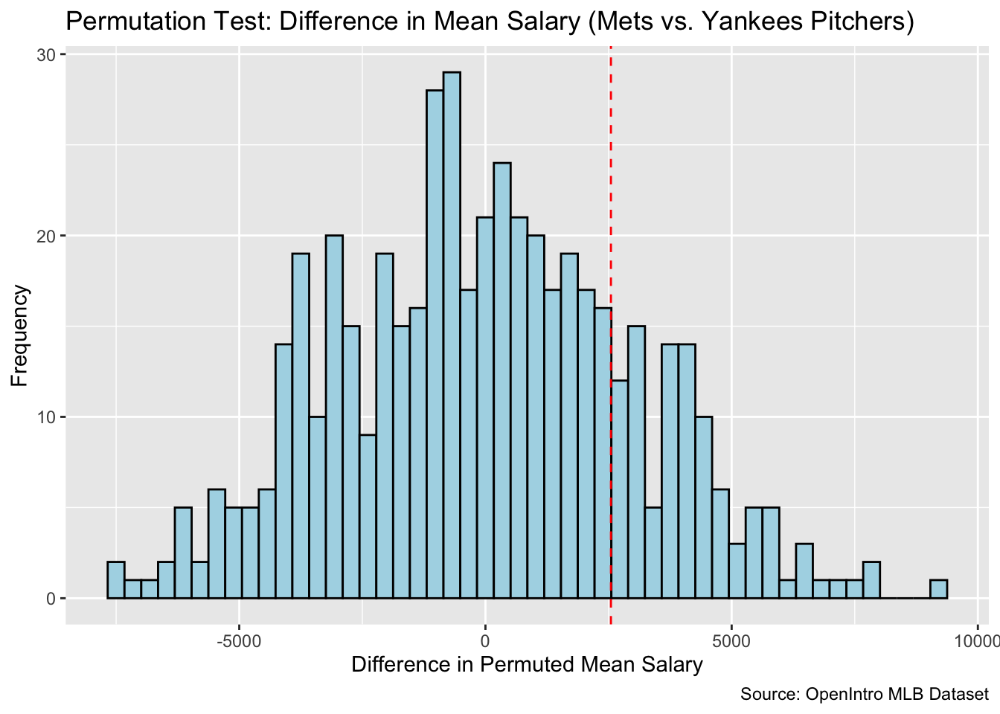

Research Question: Do pitchers on the Mets or pitchers on the Yankees make more money?
Using the MLB dataset, which shows the salary of every player on a Major League Baseball team in 2010, I plan first selecting all the pitchers on the Mets, and then all the pitchers on the Yankees. After, I plan on finding the average salary and the difference in salaries between the two teams. After I will do a permutation test and plot the permutation distribution and observed difference.
mlb_pitchers <- mlb |>filter(team %in%c("New York Mets", "New York Yankees") & position =="Pitcher") |>select(team, salary) |>drop_na()mlb_pitchers
# A tibble: 24 × 2
team salary
<fct> <dbl>
1 New York Mets 20145.
2 New York Mets 12167.
3 New York Mets 12000
4 New York Mets 3300
5 New York Mets 2900
6 New York Mets 1250
7 New York Mets 1250
8 New York Mets 1000
9 New York Mets 975
10 New York Mets 500
# ℹ 14 more rows
The table above shows just the salaries of pitchers on the Mets and pitchers on the Yankees.
# Calculate the observed difference in average salary between Mets and Yankeesobs_diff <- mlb_pitchers |>group_by(team) |>reframe(obs_ave =mean(salary)) |>reframe(obs_ave_diff =diff(obs_ave)) |>pull(obs_ave_diff)# Check if obs_diff was calculated correctlyprint(obs_diff)
[1] 2548.385
# Define the permutation function to calculate permuted differences in average salaryperm_data <-function(rep, data) { data |>mutate(salary_perm =sample(salary, replace =FALSE)) |>group_by(team) |>reframe(perm_ave =mean(salary_perm)) |>reframe(perm_ave_diff =diff(perm_ave), rep = rep)}
set.seed(47)perm_stats <-map(1:500, perm_data, data = mlb_pitchers) |>list_rbind()perm_stats
This table, perm_stats, displays the results of 500 permutations of the salary data between Mets and Yankees pitchers, showing the calculated differences in average salary (perm_ave_diff) for each permutation. Each row represents a single permutation, providing a simulated difference under the null hypothesis to help assess the significance of the observed salary difference.
print(summary(perm_stats$perm_ave_diff))
Min. 1st Qu. Median Mean 3rd Qu. Max.
-7548.23 -2193.39 -73.50 -50.74 1995.02 9158.57
cat("P-value for the observed average difference:", p_value, "\n")
P-value for the observed average difference: 0.198
perm_stats |>ggplot(aes(x = perm_ave_diff)) +geom_histogram(bins =50, fill ="lightblue", color ="black") +geom_vline(xintercept = obs_diff, color ="red", linetype ="dashed") +labs(title ="Permutation Test: Difference in Mean Salary (Mets vs. Yankees Pitchers)",x ="Difference in Permuted Mean Salary", y ="Frequency") +theme_minimal()

This histogram provides descriptive statistics for the distribution of permuted mean salary differences between Mets and Yankees pitchers, showing the range and central tendency of values generated under the null hypothesis. The p-value indicates the proportion of permuted differences that exceed the observed difference, and the histogram visualizes this distribution, with a red line marking the observed difference for comparison.
In this analysis, I conducted a permutation test to determine if there is a significant difference in average salary between pitchers on the Mets and Yankees using the mlb dataset from the openintro package. First, I calculated the observed difference in average salary of pitchers between the two teams. Then, I defined a permutation function that randomly shuffles the salaries across teams to simulate the null hypothesis, calculating the difference in mean salary for each permutation. Finally, I repeated this process 500 times to build a distribution of permuted differences, compared the observed difference to this distribution, and computed a p-value to assess significance, visualizing the results in a histogram.
Pitchers on the Mets have a higher average salary than pitchers on the Yankees by about $2,548,385.
However, the p-value of 0.198 from the permutation test suggests that this difference isn’t statistically significant. In other words, the observed difference could reasonably occur by chance in about 20% of random permutations. So, while the Mets pitchers have a slightly higher average salary in this dataset, we don’t have strong evidence to conclude that this difference is meaningful or consistent.
*In the dataset, salaries are represented in thousands. For example, a value of 400 corresponds to a salary of $400,000, and a value of 20144 represents $20,144,000.
This dataset came from the openintro package, mlb. “Salary data for Major League Baseball (2010)” https://openintrostat.github.io/openintro/reference/mlb.html